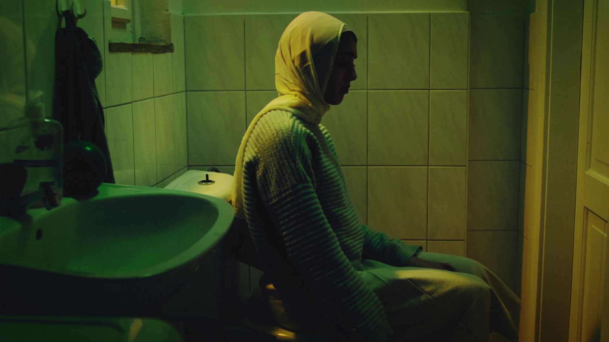
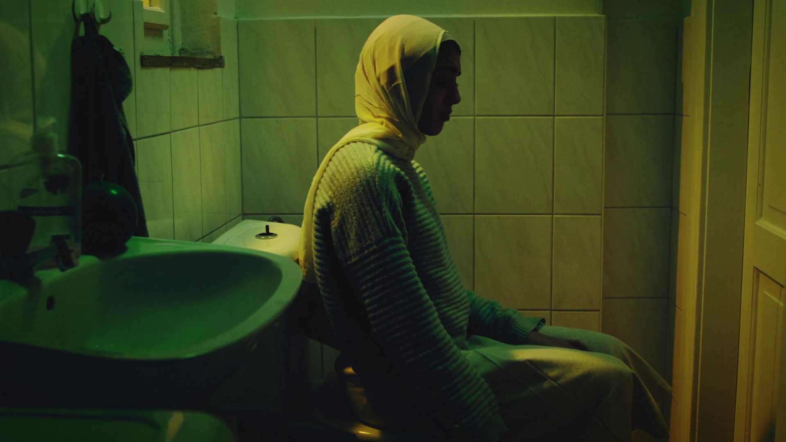

Holy Mother
Fiction, Short Film, 19′ Stereo Egypt.
Post Production, Original Score, 2021.
Directed by Hussein Hossam, produced by Atish Dipankar & Hussein Hossam.
More info here.
For this film I wanted to take a strict LCR approach (left center right), instead of panning sound gradually across the stereo field I hard panned every sound either totally to one side, or straight in the middle. I built more nuanced stereo placement of sound by creating a relationship between the two speakers. The effect is an extremely wide and stylised sound mix.
I used the same approach when making the music, as well taking the technique to a thematic level by placing opposing ideas on each speaker that slide from scene to scene. For instance electric guitars on the left speaker that acts a westernised approach, and oud on the right side to respresent the middle east. Placing our main character in the schism between these elements as she tries to navigate her culture in a foreign context.
The dichotomy is sometimes acoustic/electronic, sometimes sweet/brutal. Music produciton techniques were used on the production sound throughout, like one scene that uses dual phasers to create a sea-sick roomtone.
 
